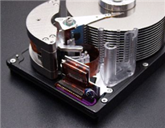
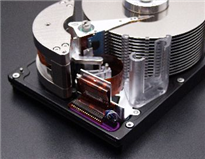

Computer Slow? Got A Virus? Need some Help?
- On-Site Service & Repair
- Computer Tune-Up
- Resident, Commercial & Industrial
- Repairs within 24 Hours
Option 1: Spend $60+ for an off the shelf anti-virus/spyware program
and hope it fixes the problem.
Option 2: Pack up your computer and bring it to a computer repair
shop where it takes DAYS to fix.
Option 3: Call Pc on the Go and have them come to YOU!!! Act Now!!!
- How to find and remove Spyware, Trojans and Viruses.
- How to prevent viruses.
- Can stores that sell computers fix them?
We will meet or Beat any written estimate!!! Call Now!!!
If your looking for a company that is a Orlando computer repair company
you have found it. Yes, Angie's List is a good place to start. We are a
computer repair and service company. We not only can take care of a
computer virus that may pop up, but we can recover lost data with our
Data Recovery options that are offered. We service Orlando and Seminole
County. Don't forget we can build you a Web Design for free for your
company. We also recommend our Web Maintenance Program which helps you
with SEO (Search Engine Optimization). Computer consultant give us a
call. Don't forget search for additional help Superpages.
FREE WEBSITE DESIGN
In todays market one of the best and inexpensive ways to advertise is
on the net. Pc on the Go is here to help you in designing a website for
your business. Our designing process is free to you at this time.
A web site can take 10 to 40 hours per page on an average to design
depending on the details.
Contact us today. There are a few things you will need to know.
Click on the Free Web Site tap above and get more information.
Are you looking for computer help?
If your looking for a company that is a Orlando computer repair company you
have found it. Yes, Angie's List is a good place to start. We are a computer
repair and service company. We not only can take care of a computer virus that
may pop up, but we can recover lost data with our Data Recovery options that are
offered. We service Orlando and Seminole County. Don't forget we can build you a
Web Design for free for your company. We also recommend our Web Maintenance
Program which helps you with SEO (Search Engine Optimization). Computer
consultant give us a call. Don't forget search for additional help Superpages.

 
